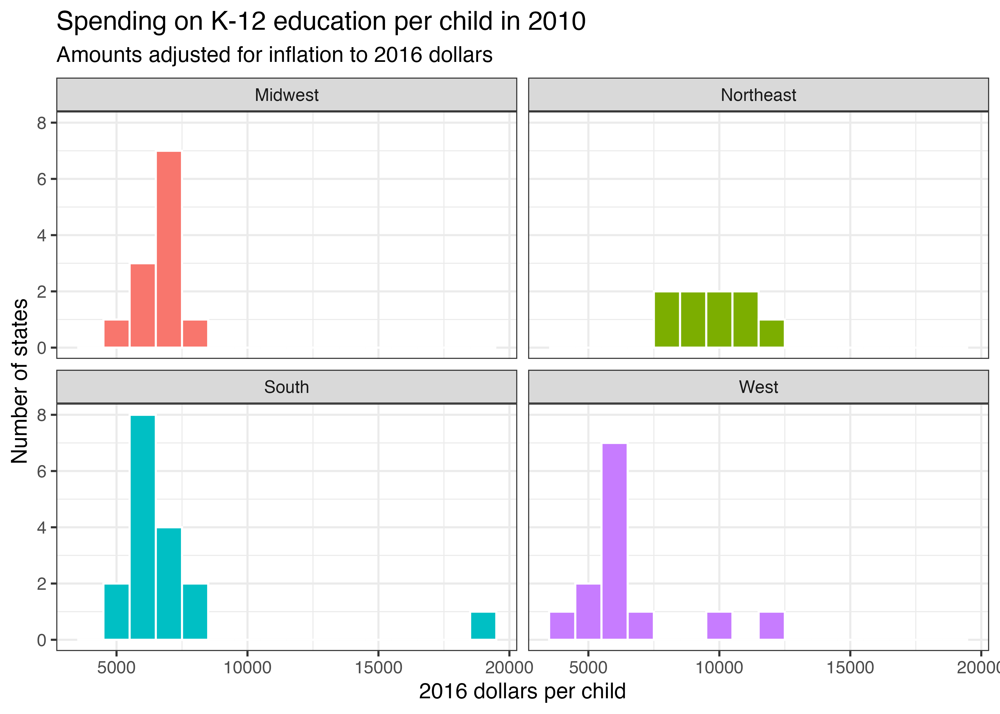
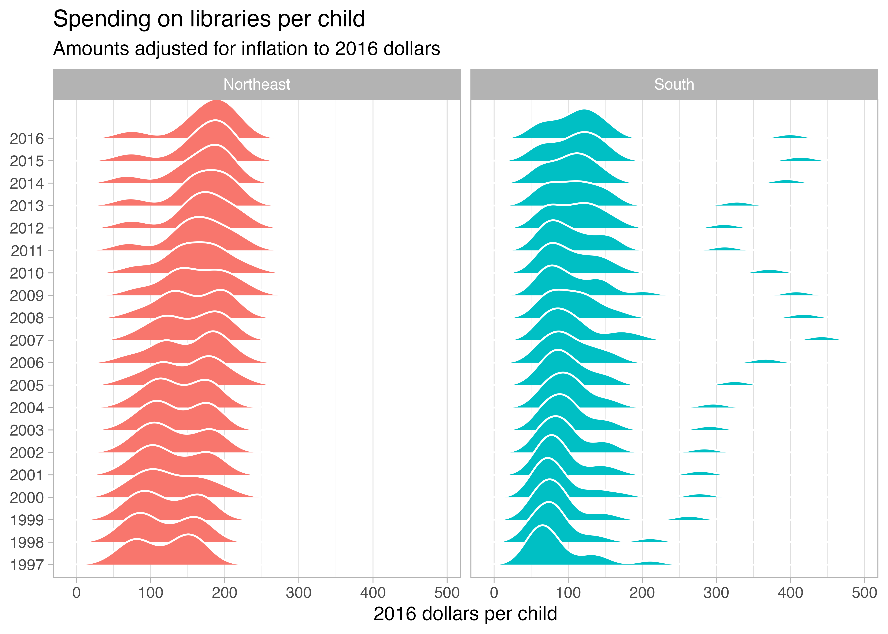
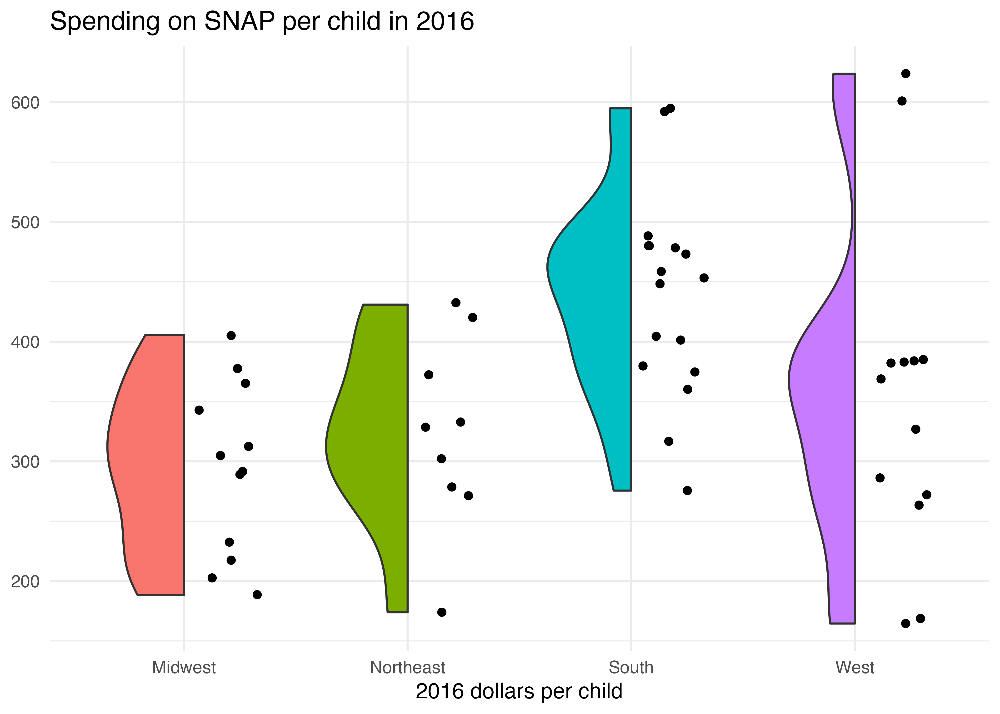

library(tidyverse) # For ggplot2, dplyr, and friends
library(ggridges) # For ridge plots
library(gghalves) # For half geoms
# Make the randomness of jittering points the same every time you render this
set.seed(1234)
# Load state data
state_details <- read_csv("data/state_details.csv")
# Load kids data and merge in state data
kids <- read_csv("data/kids.csv") |>
left_join(state_details, by = join_by(state)) |>
# These values are stored as 1000s of dollars, so this scales them back up by
# multiplying them by 1000
mutate(across(c(raw, inf_adj, inf_adj_perchild), \(x) x * 1000))Uncertainty
Exercise 6 — ISS dataviz, Spring 2026
Task 1: Session check-in
Three interesting or exciting things:
- Something
- Something
- Something
Three muddy or unclear things:
- Something
- Something
- Something
Task 2: US public spending on children
Data description and cleaning
This data comes from the Urban Institute, and it was a #TidyTuesday dataset in September 2020
This dataset is a little different from others you’ve worked with for a couple reasons!
The data has a column for each state, but does not come with columns for US Census regions (i.e. South, West, Midwest, and Northeast) or US Census divisinos (e.g., Middle Atlantic, New England, Pacific, etc.). To give you those columns, I’ve included a second dataset in
data/state_details.csvthat contains these details—in the code below you’ll useleft_join()to merge this dataset with the main data.The main
data/kids.csvfile is long and tidy, which means that instead of having a column for education expenditures, a column for Pell Grants, a column for Head Start expenditures, and so on, there’s one column calledvariablewith rows for each of the different variables, like this:state variable year raw inf_adj inf_adj_perchild <chr> <chr> <dbl> <dbl> <dbl> <dbl> 1 Alabama PK12ed 1997 3271969 4665308. 3.93 2 Alabama highered 1997 956505 1363824. 1.15 3 Alabama edsubs 1997 107733 153610. 0.129 4 Alabama edservs 1997 246057 350838. 0.296 5 Alabama pell 1997 120833. 172289. 0.145 6 Alabama HeadStartPriv 1997 55777. 79530. 0.0670 7 Alabama TANFbasic 1997 63818. 90994. 0.0766This means you’ll need to use
filter()to choose the different variables you want to work with:k12_spending <- kids |> filter(variable == "PK12ed")
After merging the two datasets, you’ll have 9 columns in kids:
state: The state (including the District of Columbia)variable: The variable being measured. There are 23 of these—see the codebook here for a complete list. You’ll be working with these in this exercise:PK12ed: Elementary and secondary education expendituresSNAP: Public spending on SNAP benefit payments that go to childrenlib: Public spending on libraries
year: The yearraw: The actual amount spentinf_adj: The amount spent, adjusted to 2016 dollarsinf_adj_perchild: The amount spent per child in the state, adjusted to 2016 dollarsstate_abb: The state abbreviation (e.g., AL, AK, AZ)region: The US Census region (South, West, Midwest, and Northeast)division: The US Census division (e.g., Middle Atlantic, New England, Pacific)
The code below loads, merges, and cleans the two datasets, resulting in a data frame named kids. You don’t need to modify anything in this chunk of code—you only need to run it.
Histograms
Run the code chunk below to see a plot. It shows the distribution of inflation-adjusted, per child spending on K-12 education in 2010 across the four US Census regions.

Use ggplot() and geom_histogram() in the chunk below to re-create the plot above using the kids dataset. Some hints:
- You’ll need to make a smaller filtered dataset first and then plot that, just like you did with exercise 3 and 4.
- You’ll need to filter the data so it only includes rows for elementary and secondary education spending (
variable == "PK12ed") - You’ll need to filter the data so it only shows 2010 data
- You’ll need to filter the data so it only includes rows for elementary and secondary education spending (
- You’ll need to facet by region and remove the legend
- You’ll need to choose a good binwidth (the image above uses $1,000 per bin)
- The image above uses
theme_bw()
# Do stuff hereInterpret this plot in a few sentences. What does this show?
DO THAT HERE
Densities
Run the code chunk below to see a plot. It shows the distribution of inflation-adjusted, per child spending on libraries in the Northeast and the South from 1997 to 2016.

Use ggplot() and geom_density_ridges() in the chunk below to re-create the plot above using the kids dataset. Some hints:
- You’ll need to make a smaller filtered dataset first and then plot that, just like you did with exercise 3 and 4.
- You’ll need to filter the data so it only includes rows for library spending (
variable == "lib") - You’ll need to filter the data so it only shows data for the south and northeast (
region %in% c("South", "Northeast"))
- You’ll need to filter the data so it only includes rows for library spending (
- You’ll need to facet by region and remove the legend
- If you use
y = year, you’ll get an error.geom_density_ridges()needs a categorical variable on the y-axis to work. You can convertyearto categorical by making it a factor (what R calls categorical variables). You can do that insideaes(), likeaes(..., y = factor(year)). - Add a white border to
geom_density_ridges() - The image above uses
theme_light()and it usestheme()to disable the major y-axis gridlines (panel.grid.major.y = element_blank())
# Do stuff hereInterpret this plot in a few sentences. What does this show?
DO THAT HERE
Boxes, violins, and friends
Run the code chunk below to see a plot. It shows the distribution of inflation-adjusted, per child spending on SNAP in 2016 across all four US census regions.

Use ggplot() and geom_half_point() and geom_half_violin() in the chunk below to re-create the plot above using the kids dataset. Some hints:
- You’ll need to make a smaller filtered dataset first and then plot that, just like you did with exercise 3 and 4.
- You’ll need to filter the data so it only includes rows for SNAP spending (
variable == "SNAP") - You’ll need to filter the data so it only shows data for 2016
- You’ll need to filter the data so it only includes rows for SNAP spending (
- You’ll need to facet by region and remove the legend
- The image above uses
theme_minimal()
# Do stuff hereInterpret this plot in a few sentences. What does this show?
DO THAT HERE
Task 3: Extension
Copy the code for one of your plots above and paste it into the chunk below. Do some extra things to it, like using a different variable (there are lots of them!), filtering for a specific region or division, looking at different years, changing the labels, changing the colors, adding a new geom, changing the theme, or whatever. This is your chance to play around and explore.
# Do stuff here